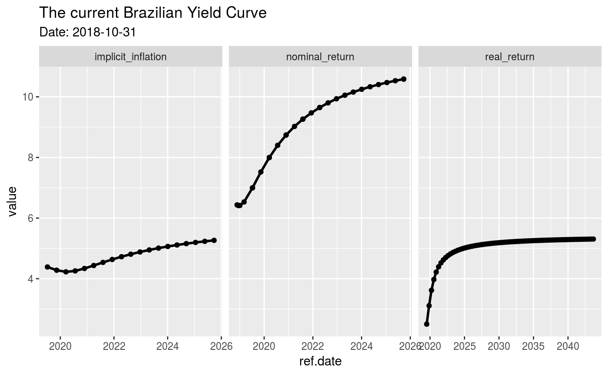

The latest version of GetTDData offers function get.yield.curve to download the current Brazilian yield curve directly from Anbima. The yield curve is a tool of financial analysts that show how, based on current prices of fixed income instruments, the market perceives the future real, nominal and inflation returns. You can find more details regarding the use and definition of a yield curve in [Investopedia][http://www.investopedia.com/terms/y/yieldcurve.asp].
library(GetTDData)
df.yield <- get.yield.curve()
str(df.yield)## 'data.frame': 117 obs. of 5 variables:
## $ n.biz.days : num 252 378 504 630 756 ...
## $ type : chr "real_return" "real_return" "real_return" "real_return" ...
## $ value : num 3.27 3.26 3.55 3.86 4.12 ...
## $ ref.date : Date, format: "2018-05-23" "2018-09-26" ...
## $ current.date: Date, format: "2017-09-13" "2017-09-13" ...And we can plot it for the derised result:
library(ggplot2)
p <- ggplot(df.yield, aes(x=ref.date, y = value) ) +
geom_line(size=1) + geom_point() + facet_grid(~type, scales = 'free') +
labs(title = paste0('The current Brazilian Yield Curve '),
subtitle = paste0('Date: ', df.yield$current.date[1]))
print(p) ## Warning: Removed 1 rows containing missing values (geom_point).